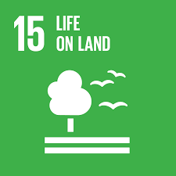
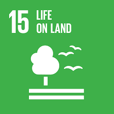

The United Nations established the Sustainable Development Goals (SDGs) in 2015 as a set of 17 global objectives to address the most pressing issues facing the world. These include access to healthcare and education, poverty, hunger, inequality, and climate change. Every nation has a clear path for creating a better future thanks to the SDGs.
Every goal has particular objectives that direct countries in preserving the environment and raising people's standard of living. To ensure that no one is left behind, they promote collaboration, equity, and sustainable development. The SDGs also emphasize the importance of strong community involvement and responsible leadership.
In general, the SDGs are a common goal that the entire world hopes to accomplish by 2030. They serve as a reminder to everyone that cooperation, responsible decision-making, and action toward a safer, healthier, and more sustainable future for all are what lead to progress.


 



SDG 1: No Poverty seeks to eradicate poverty worldwide in all of its manifestations. By 2030, it aims to end extreme poverty, which is defined as living on less than US$3.00 (2021 PPP) per day for each individual. Reducing inequality and giving social protection to the most vulnerable groups are additional goals.
But as of 2025, an estimated 808 million people, or roughly 9.9% of the world's population, still live in extreme poverty, indicating that progress is stalling. The UN places a strong emphasis on expanding social protection systems, inclusive economic policies, and increased international cooperation in low-income and fragile nations in order to hasten change.
Return to TopSDG 2: Zero Hunger seeks to end hunger, achieve food security and improved nutrition, and promote sustainable agriculture. The goal targets eliminating undernourishment and ensuring that everyone, especially children and vulnerable populations, has access to safe, nutritious, and sufficient food.
However, the situation is still dire: 673 million people, or 8.2% of the world's population, were undernourished in 2024. World Health Organization. In that same year, 2.33 billion people experienced moderate to severe food insecurity, underscoring the critical need for fair food systems and concerted international action.
Return to Top
SDG 3: Good Health and Well-Being seeks to guarantee healthy lives and advance wellbeing for people of all ages. Reducing premature death from non-communicable diseases, eradicating epidemics like AIDS, TB, and malaria, and decreasing maternal and child mortality are among the objectives.
Major health issues still exist despite advancements: non-communicable diseases like cancer and cardiovascular disease killed an estimated 18 million people under the age of 70 in 2021. Additionally, there is a severe labor shortage in the world's health systems; in 2023, there was a shortage of 14.7 million health workers, endangering the provision of critical care.
Return to Top
SDG 4: Quality Educationseeks to promote opportunities for lifelong learning and guarantee inclusive, equitable, and high-quality education for all. An estimated 272 million children and young people were still not attending school as of 2023.
The goal encourages free primary and secondary education for all students in order to close these gaps. It also favors lowering disparities in access to education and increasing vocational training.
Return to TopSDG 5: Gender Equality seeks to eradicate legal obstacles, violence, and discrimination against women and girls. There were still at least one law prohibiting women from holding the same jobs as men in 47% of the countries surveyed in 2024.
The objective also aims to eradicate detrimental customs like child marriage. 19% of women in the 20-24 age group were married before turning 18 in 2024.
Return to Top
SDG 6: Clean Water and Sanitation seeks to ensure that everyone on the planet has access to clean drinking water, sanitation, and hygiene. In 2022, 3.5 billion people lacked adequate sanitation, and 2.2 billion lacked safe drinking water.
The goal calls for improved water-management systems and increased infrastructure to speed up progress. In order for communities to meet international standards, it also encourages investments in wastewater treatment and hygiene services.
Return to Top
SDG 7: Affordable and Clean Energy seeks to guarantee that everyone has access to modern, affordable, dependable, sustainable energy. According to UN data, nearly 92% of the world's population has access to electricity as of 2023, but over 666 million people do not.
But progress is uneven: in 2023, only 74% of people worldwide had access to clean cooking, meaning that about 2.1 billion people were still using polluting fuels. The report recommends significant investments in distributed renewable energy (such as mini-grid/off-grid solar) and more robust international financing in order to achieve SDG 7 targets.
Return to Top
SDG 8: Decent Work and Economic Growth encourages full and productive employment, decent work for all, and sustained, inclusive economic growth. Even though the global unemployment rate fell to a record low of 5% in 2024, roughly 57.8% of workers worldwide continue to work informally without legal protection.
Growth is still precarious: due to tensions in international trade and policy uncertainty, GDP per capita growth is expected to slow to 1.5% in 2025. Formalizing work, bolstering labor rights, and giving green and digital economy jobs top priority are the main objectives.
Return to TopSDG 9: Industry, Innovation and Infastructure seeks to encourage innovation, sustainable industrialization, and the development of resilient infrastructure. Many areas still lack adequate infrastructure investment, and high-emission industries continue to be a major source of pollution worldwide.
The goal supports green industrial policies, technology transfer, and sustainable infrastructure projects to address these issues. Increasing productivity while lessening the effects on the environment also requires promoting research and development
Return to TopSDG 10: Reduced Inequalities seeks to promote social, economic, and political inclusion in order to lessen inequality both within and between nations. Despite some advancements, marginalized groups continue to face obstacles to opportunities and income inequality is still very high.
The goal places a strong emphasis on equal representation in decision-making, universal social protection, and progressive taxation. SDG 10 aims for more equitable growth for all by eradicating discrimination and granting access to services.
Return to TopSDG 11: Sustainable Cities and Communities seeks to create inclusive, secure, resilient, and sustainable cities. Many urban dwellers continue to struggle with inadequate infrastructure, poor transportation, and expensive housing.
The goal promotes climate-resilient infrastructure, effective public transportation, and sustainable land-use regulations. Additionally, it places a strong emphasis on citizen involvement to guarantee that urban planning benefits every member of society.
Return to TopSDG 12: Responsible Consumption and Production promotes sustainable production and consumption by cutting waste and increasing resource efficiency. Environmental degradation results from the fact that many nations are still far from implementing circular economy principles.
Stronger regulations on food loss reduction, reuse/recycling, and sustainable procurement are required to achieve the goal. SDG 12 seeks long-term environmental sustainability by separating economic growth from resource depletion.
Return to TopSDG 13: Climate Action urges immediate action to mitigate the effects of climate change. Vulnerable populations are exposed because many nations have not yet fully incorporated climate risks into national planning.
The goal encourages early warning systems for disaster resilience, capacity building, and climate finance. Reducing climate risks requires investments in green infrastructure, renewable energy, and nature-based solutions.
Return to Top
SDG 14: Life Below Water is to preserve and use marine resources, seas, and oceans sustainably for sustainable development. In 2022, about 33% of the world's fish stocks were overfished, endangering both food security and marine biodiversity.
Additionally, the objective encourages controlling fishing methods, safeguarding coastal habitats, and lowering marine pollution. Sustainable policies and international collaboration are crucial to preserving healthy oceans for coming generations.
Return to TopSDG 15: Life On Land is concerned with safeguarding, rehabilitating, and encouraging sustainable use of terrestrial ecosystems. Ten million hectares of deforestation occur annually, resulting in a decline in biodiversity and environmental deterioration.
Reforestation, sustainable land management, and the preservation of endangered species are all encouraged. Reducing desertification and land degradation is another effort to guarantee sustainable livelihoods.
Return to TopSDG 16: Peace, Justice And Strong Institution seeks to create inclusive and peaceful societies, give everyone access to justice, and establish responsible institutions. One in three people worldwide will encounter violence at some point in their lives, underscoring the necessity of more robust government and the rule of law.
Reducing corruption, increasing transparency, and promoting participatory decision-making are further objectives. Ensuring the protection of everyone's social, economic, and political rights requires the establishment of strong institutions.
Return to Top
SDG 17: Partnerships For The Goals seeks to support the accomplishment of all SDGs by fortifying international partnerships. Official development assistance totaled $205 billion in 2024, but many countries, particularly the least developed ones, still lack sufficient funding.
The objective encourages multilateral cooperation, technology transfer, financial assistance, and capacity building. SDG 17 aids in mobilizing resources and expertise to accomplish the other goals by promoting collaborations between governments, businesses, and civil society.
Return to TopIn conclusion, the Sustainable Development Goals serve as a roadmap for a more equitable, healthy, and sustainable future. They demonstrate how everyone must cooperate and accept responsibility for problems like poverty, inequality, and climate change.
To sum up, the Sustainable Development Goals offer a path forward for creating a more equitable and sustainable world. They tackle important problems like hunger, poverty, inequality, and climate change. These objectives provide nations with a clear path for constructive transformation.
The SDGs encourage collaboration, accountable leadership, and engaged community participation. Everyone has a part to play in reaching these global goals. Collaboration increases the effectiveness and durability of progress.
When combined with group effort, even modest actions can result in significant change. The SDGs give people hope for a brighter future. They point us in the direction of a society in which everyone can live with respect and opportunity. To learn more visit the United Nations Website.
Return to Top